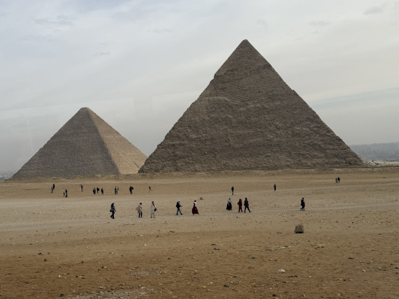
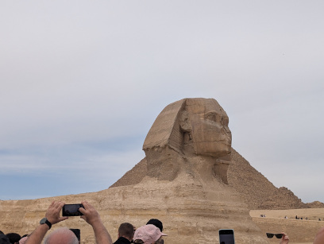
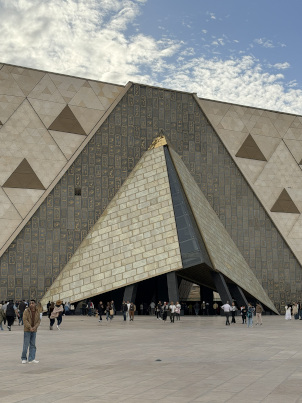
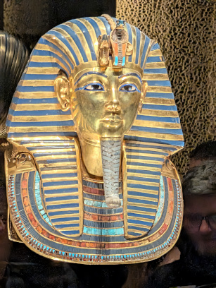

Cairo has many impressive locations, but the two main ones are the Pyramids of Giza and the GEM (Grand Egyptian Museum).
The Pyramids of Giza

The Pyramids of Giza are one of the great wonders of the world. They were built in ancient times as resting grounds for three major pharaohs: Khufu, his son Khafre, and his grandson Menkaure.
The Sphinx

Nearby the pyramids is the ever watching guardian: the Sphinx! Made out of sandstone, it is an impressive statue known for missing its nose. This, however, is due to vandalism long before Napoleon arrived.
The Grand Egyptian Museum

The Grand Egyptian Museum, or GEM for short, is the premier museum in Egypt! It contains most of the artifacts that ancient Egypt is known for, including the mask of King Tut. The Grand Egyptian Museum Home Page
